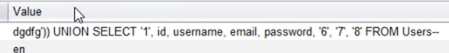

)) to end the sql error, use union to concat another command, the command will be "SELECT"
to select specific calumns from the users table.
we guess the right amount of columns by just adding every number until there's no longer an error.
after getting a good response, we can guess table names like "username, password, email" etc and change them with the numbers to get the data in those columns